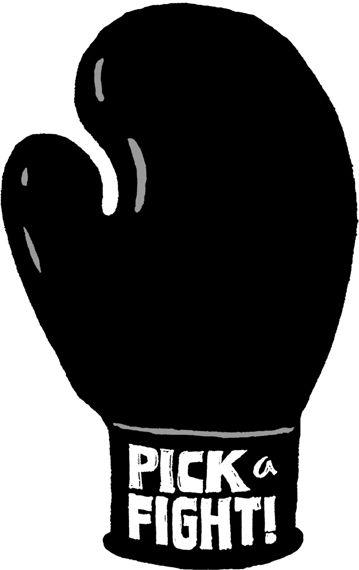

{% include JB/setup %}
{% raw %}
<div>

<h2 id="filepos145594" class="calibre19"><span class="calibre2"><a class="calibre13"></a><strong class="calibre14">Decommoditize your product</strong></span></h2><div class="calibre4"></div>
<p class="calibre7">If you're successful, people will try to copy what you do. It's just a fact of life. But there's a great way to protect yourself from copycats: Make <em class="italic1">you</em> part of your product or service. Inject what's unique about the way you think into what you sell. Decommoditize your product. Make it something no one else can offer.</p>
<p class="calibre17">Look at <a href="http://Zappos.com" class="calibre9">Zappos.com</a>, a billion-dollar online shoe retailer. A pair of sneakers from Zappos is the same as a pair from Foot Locker or any other retailer. But Zappos sets itself apart by injecting CEO Tony Hsieh's obsession with customer service into everything it does.</p>
<p class="calibre17">At Zappos, customer-service employees don't use scripts and are allowed to talk at length with customers. The call center and the company's headquarters are in the same place, not oceans apart. And all Zappos employees--even those who don't work in customer service or fulfillment--start out by spending four weeks answering phones and working in the warehouse. It's this devotion to customer service that makes Zappos unique among shoe sellers.<a id="filepos147051" class="calibre16"></a><a href="Rework_split_060.html#filepos158400" class="calibre9"><sup class="calibre20"><span class="calibre6">*</span></sup></a></p>
<p class="calibre17">Another example is Polyface, an environmentally <a class="calibre16"></a>friendly Virginia farm owned by Joel Salatin. Salatin has a strong set of beliefs and runs his business accordingly. Polyface sells the idea that it does things a bigger agribusiness can't do. Even though it's more expensive to do so, it feeds cows grass instead of corn and never gives them antibiotics. It never ships food. Anyone is welcome to visit the farm anytime and go anywhere (try that at a typical meat-processing plant). Polyface doesn't just sell chickens, it sells a way of thinking. And customers love Polyface for it. Some customers routinely drive from 150 miles away to get "clean" meat for their families.<a id="filepos147914" class="calibre16"></a><a href="Rework_split_060.html#filepos158733" class="calibre9"><sup class="calibre20"><span class="calibre6">*</span></sup></a></p>
<p class="calibre17">Pour yourself into your product and everything <em class="italic1">around</em> your product too: how you sell it, how you support it, how you explain it, and how you deliver it. Competitors can never copy the <em class="italic1">you</em> in your product.</p>
<p class="calibre3"><a class="calibre16"></a></p><div class="calibre4"></div>
</div>

{% endraw %}

